Design Challenge: Cruise
Prompt
Scenario
The San Francisco Muni interface is undergoing a redesign, but hardware of the
terminal is to remain the same.
The only requirement is that all the current features are to remain:
- Buying a paper ticket
- Buying a clipper card
- Adding value to a card or ticket
- Viewing balance of the card or ticket
New feature proposals are welcome.
Task
Design a web-based interface replicating optimal functionality for a new Muni terminal
Result + Deliverables
Selected Mockups
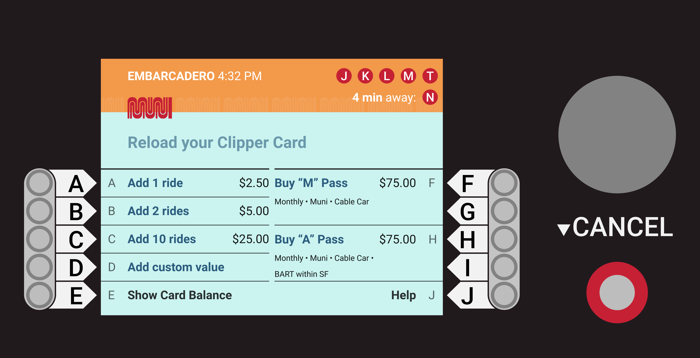
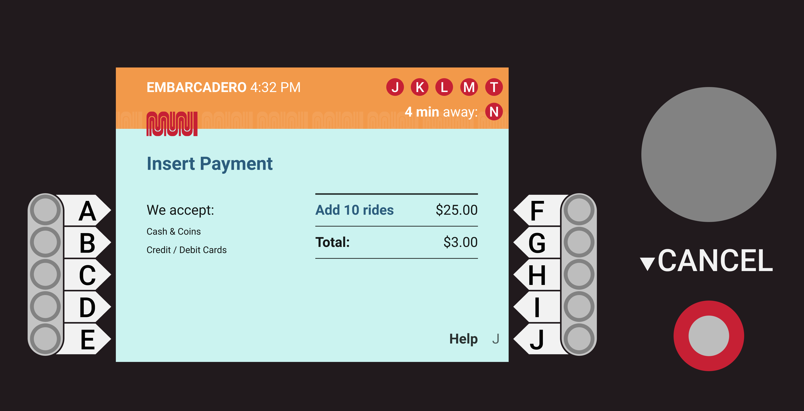
Figma Prototype
Web-based Prototype
Optional Features
- Station Name + Time
- Train Tracker
Features not named as optional are considered core to the redesign
Process
Background + Domain Research
Mass transit is one of the most universal experiences of living in a modern city. Everyone has to get around, and many different kinds of people do so by taking the train, bus, or subway every day. That means that a lot of people, myself included, are intimately familiar with the interfaces mediating these interactions.
However, many of the parameters differentiating how we use these interfaces (such as where we work and live, our physical ability, and how old we are or whether we are in school) remain relatively constant for a given individual, and so that individual might only see a small set of the available use cases. Thus, even though this is only a ~5 hour design challenge, it's important to spend time researching the transit system, and how different people use it. For many people in the US, public transit is the only option, and we must take care to ensure that our interface serves edge cases just as well as main experiences.
Muni's Current Ticketing System + Fare Structure
TVMs (Ticket Machines)
We are constrained by the hardware of the existing ticketing machines, which consists of:
- A non-touchscreen display (4:3 aspect ratio, ~9×12", assumed resolution to be 1024×768 for ~96 dpi)
- Alphabetically labeled (A-E) softkeys lining the bottom halves of the left and right of the display
- A CANCEL key
- Receptacles and readers for:
- Bills + Coins
- Cards (with a keypad for PIN entry, and a safety mirror)
- Cards, Change, and Reciepts
- Contactless Clipper cards
- A speaker for feedback tones
- An audio jack for narration for customers with limited vision
- A LED marquee display device on top
All controls on the machine are labeled with text as well as braille.
Fare Structure
TVMs sit within a constellation of Muni fare-collection options. Briefly, customers can use:
- A Clipper card to tap on when boarding a bus / tram street-side, or tap into a Muni Metro station
- Mobile tickets on the Muni Mobile smartphone app for proof-of-payment when boarding street-side, or for showing to an agent at a Muni Metro station
- A paper ticket to scan at a Muni Metro station
- A transfer slip / pass for proof-of-payment when boarding street-side, or for showing to an agent at a Muni Metro station
- Cash fare boxes when boarding a bus / tram street-side
At a TVM, customers can purchase or reload paper tickets, as well as Clipper cards. For almost all ticketing machine options, pricing is broken down into the follow categories:
- Regular
- Discount (Youth, Senior, People with Disabilities)
In addition to adding cash value to a Clipper card, or purchasing single or double-ride paper tickets, the following monthly passes may be purchased (with the same pricing categories as above):
- "M" Pass: Muni (includes Cable Car)
- "A" Pass: Muni (includes Cable Car) + BART within SF
Finally, special Visitor Passports for tourists can be purchased without a Clipper card:
- 1 Day
- 3 Day
- 7 Day
This video gives a pretty comprehensive overview of the current TVM interface, although Muni has simplified its fare structure since then.
Muni Metro Stations
Muni Metros stop at a variety of different station types, including on-street, street-side, and underground stations. It's important to note that currently, TVM (and fare gates) are only present in underground stations. All other station types operate using a proof-of-payment system.
All underground stations are also staffed by station agents within booths. This video mentions a few of the customer service experiences BART (which shares stations with Muni downtown) agents can encounter - many of them have to do with TVMs. It's important to note, however, that Muni and BART do not use the same ticketing experiences (BART relies on a different fare system), although it seems the physical machines are similar.
Muni's Customer Demographics
As a part of identifying use cases, I began by looking at studies on who uses Muni, and what for.
The latest SFMTA Travel Decision survey is from 2017. Key findings are summarized here.
SFMTA also publishes a survey specific to Muni riders. Key findings are here.
As a part of MUNIForward, comprehensive surveys of individual lines were conducted as well. A summary of results from the 14 Mission Survey in 2015 is here.
Universal Design Considerations
As mentioned, many different people in different contexts use public transit interfaces, and the usability of such interfaces must be evaluated for all. Laws such as the ADA and California's Building Standards Codes also apply. I prefer conceptualizing accessible design within the framework of "Universal Design", as advocated by companies such as Microsoft and the World Health Organization. Such an approach sees designing for people with disabilities as an inherent part of good design in general, and recognizes that all of us experience disability, whether permanent, or transient, and a product which takes this into account is made more usable for everyone.
An example given by Microsoft:
Designing for people with permanent disabilities can seem like a significant constraint, but the resulting designs can actually benefit a much larger number of people. For example, closed captioning was created for the hard of hearing community. But, there are many benefits of captioning such as reading in a crowded airport, or, teaching children how to read.
In a real world project, thorough vetting of designs for legal compliance at the local, state, and federal levels would be needed. For this design exercise, I mainly rely on the following documents for guidance. (Obviously, good universal design requires more than just complying with regulations or going through a checklist, but this gives us a good starting point for considering the needs of all our customers).
As a part of enforcing the ADA, the Department of Justice assessed "Kiosks and Other Information Transaction Machines" used by the federal government, and provided a checklist to aid in accessibility evaluation.
The government of Ontario also provides some examples of accessibility features.
The Federal Transit Administration sponsored research into the accessibility of existing TVMs (note that the research is relatively old, dating from 1998).
Main Use Cases + Permutations
High Level User Differences
In general, Muni customers can be differentiated in the following (non-independent) ways:
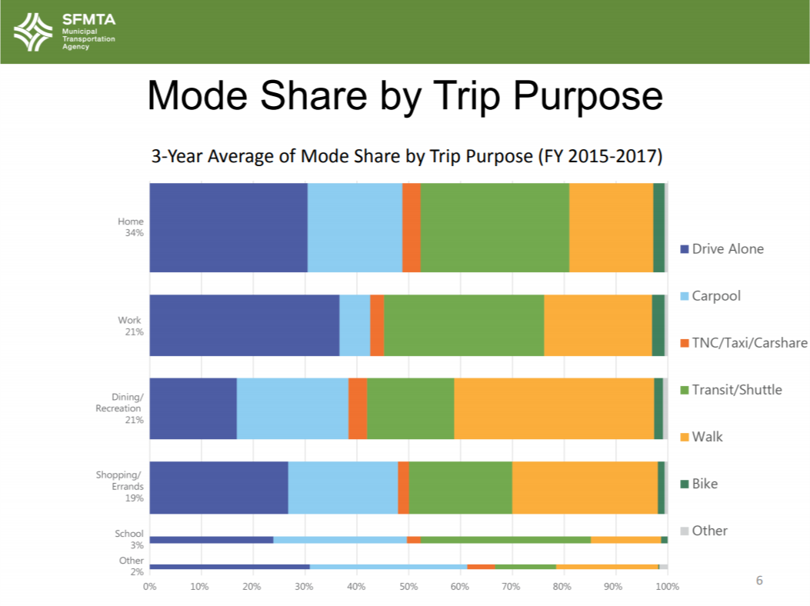
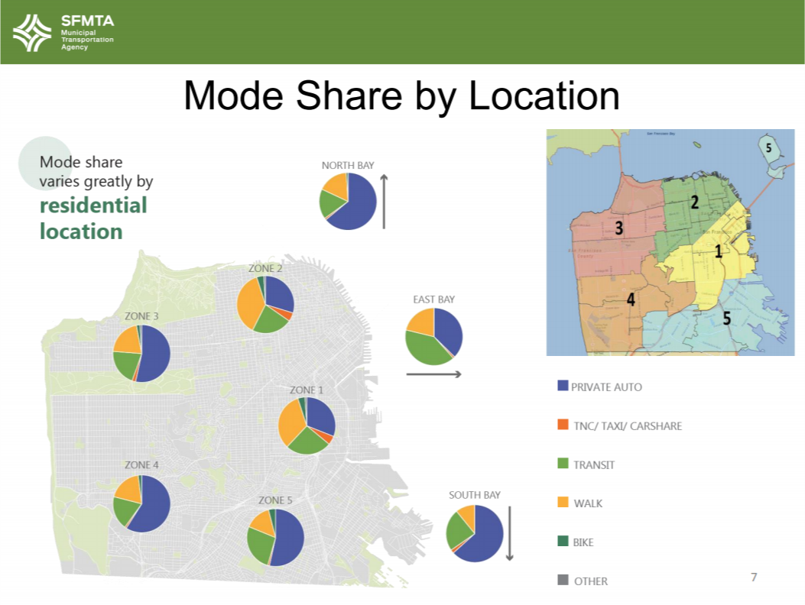
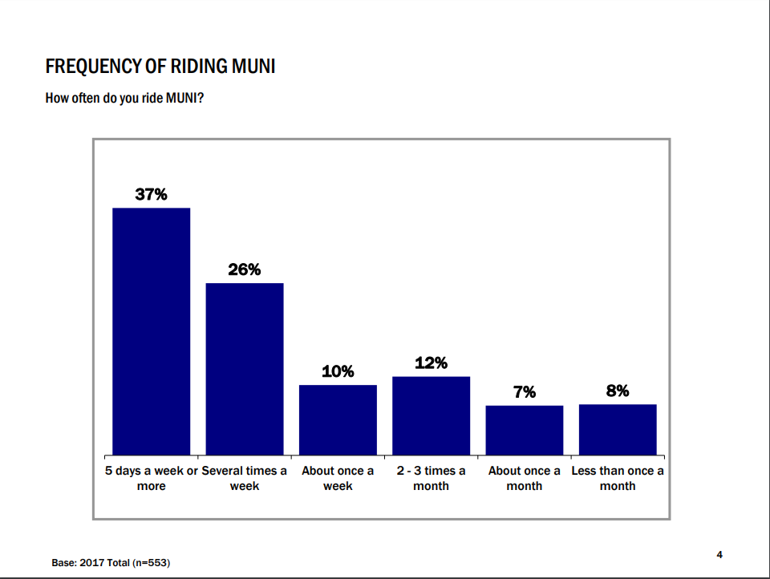
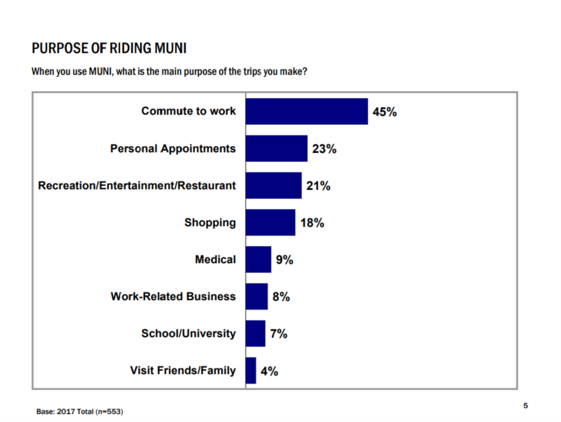
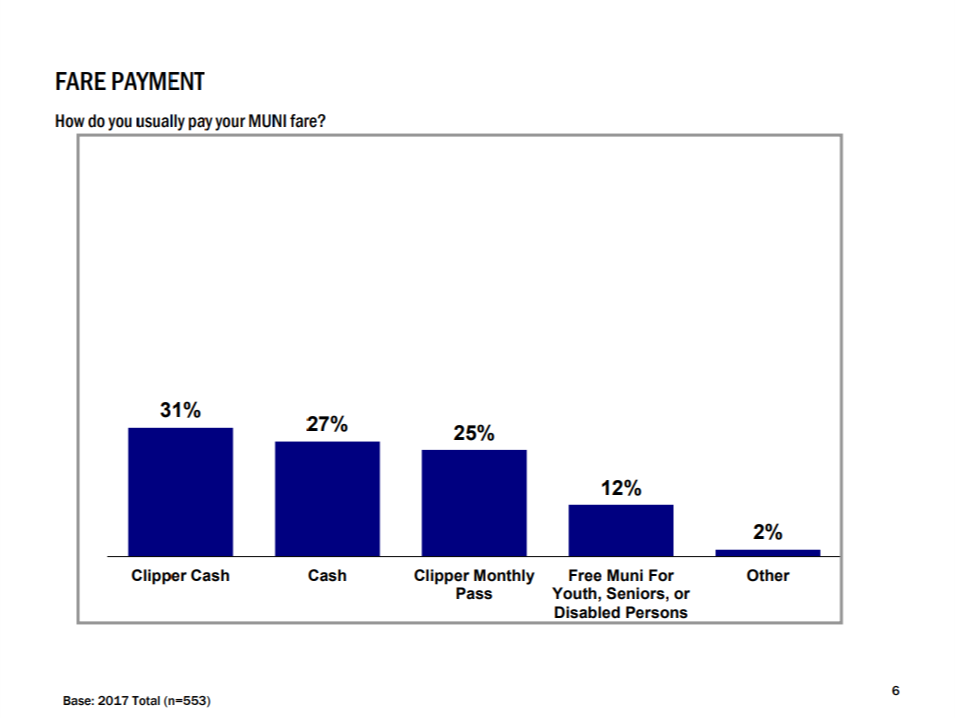
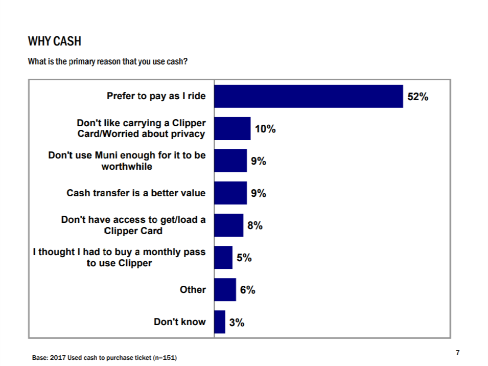
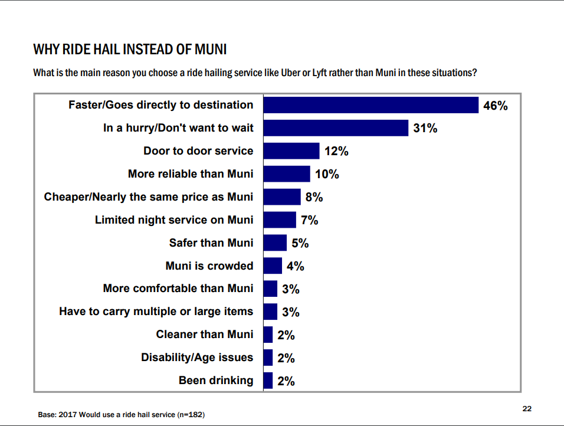
- Trip Purpose
- Work Inbound Commute: regular, most time-sensitive
- School Inbound Commute: regular, most time-sensitive
- Home Inbound Commute: regular, somewhat time-sensitive
- Shopping / Errands: irregular, somewhat time-sensitive
- Recreation / Entertainment: irregular, off working hours, more time-sensitive
- Frequency of Use
- First-time user: (eg Bay Area visitors), no mental model of transit system or interfaces/flows. Browses options (if there's time). Purchases multi-day passes or paper tickets.
- Infrequent user: mental model of transit system, but not interfaces/flows. Knows which options to select, but does not memorize flow. Uses Clipper, but reloads at TVMs.
- Frequent user: mental model of transit system and interfaces/flows. Memorizes flows. Uses Clipper Autoload.
Note that it's possible for a customer to behave as a different kind of user for different lines - such as being a frequent user of their commute line(s), but an infrequent user of a line to visit the doctor.
- Transit Reliance
- Only uses non-Muni transit
- Prefers non-Muni transit
- Balanced between Muni and non-Muni transit
- Prefers Muni transit
- Only uses Muni transit (no alternative modes available)
- TVM Reliance
- Only uses non-TVM ticketing
- Prefers non-TVM ticketing
- Balanced between TVM and non-TVM ticketing
- Prefers TVM ticketing
- Only uses TVM ticketing
Many of these parameters correlate with more basic demographic information, such as age, ethnicity, socioeconomic status, and location of work and residence.
In addition to these high level parameters, I also compiled a taxonomy for differing ability relevant to the use of TVMs derived from the universal design resources I explored earlier:
Axes of Ability
- Sight
- Contrast
- Color
- Comprehension
- Reading Ability
- Cognitive Ability
- Memory
- Attention
- Language
- Mobility
- Tremors
- Dexterity
- Strength
- Reachability
- Hearing
- Ambient Noise
- Hearing Ability
Example Users and Use Cases
The number of possible permutations and key differentiators between different customers and their use cases, as well as the importance of ensuring no customer slips through the cracks in this project means that relying on user personas alone is of limited effectiveness. However, conceptualizing a few personas which explore different logical extremes of our users and use cases is helpful to gut-check effectiveness in the course of iteration. In any real process, we would need multiple cycles of validation and testing in order to ensure results are accurate.
Irene, "the Grad Student"
Irene is an English-speaking graduate student in her late 20s. She researches at USF, but lives in Outer Sunset, on the N-Judah.
Irene often needs to visit both USF campuses. She prefers to bike to the main campus, but will take the bus or drive if it's raining or late at night. She takes Muni Metro to the Mission Bay campus. Irene's commute isn't always during rush hour, so rideshare is also occasionally faster, and she will take that if running late or Muni service has ceased. Irene owns car, but doesn't drive often because it's difficult to find parking.
Since Irene's work and home Muni stations are both aboveground, she rarely uses TVMs to pay her fare, and isn't actually sure how to get a Clipper card. This also means that despite riding Muni relatively frequently, she's never been exposed to the full selection of Muni's passes and discounts, and largely relies on cash ticketing. She certainly didn't expect an entirely different fare collection system when boarding downtown for the first time.
James, "the Summer Intern"
James is an English-speaking college student in his early 20s in San Francisco for the first time for a summer internship. He works in the Financial District, but lives off 16th St Mission.
James also does not own a car. James's commute is normally in rush hour, so he's sensitive to traffic and crowdedness. Since he's in the Mission, he usually relies on BART. James is also quite tech-savvy, and likes trying out newer modes of transit, such as the electric scooters recently introduced downtown.
James also frequently visits other parts of SF and the Bay Area, and will take Muni Metro, BART, and Caltrain when available, but tends to prefer using rideshare over the bus. He usually relies on an app such as Google Maps or Transit for direction and train times, and would really just prefer to use his phone for everything. James started his SF transit adventure using a combination of BART tickets and the Muni Mobile app, as well as Caltrain passes provided by his company, but finally figured out that he could purchase a Clipper card at Walgreens. James wears glasses and is sometimes a hot mess when he takes Muni.
Ricardo, "the Restaurant Manager"
Ricardo is a Spanish-speaking restaurant manager in his late 30s who has lived in SF for most of his life. He lives off Castro, but works near 24th St Mission, and generally takes the bus to work. Ricardo is quite familiar with the bus and tram system near where he lives and works, and frequently takes Caltrain to San Jose to visit family, but doesn't spend much time downtown. Ricardo is accustomed to paying fare the way he always has, using cash. He owns a Clipper card, but doesn't have much opportunity to reload it, since he doesn't own a computer, and uses a relatively old phone. Ricardo is colorblind (deuteranopia).
Yueming, "the Tourist"
Yueming is a Chinese-speaking tourist in her late 60s visiting SF (and the US) for the first time, to travel, and to see extended family. Yueming is accustomed to taking public transit (especially trains) places, and took BART from the airport (after trying to figure out how to buy a ticket for a very long time), but is confused by the difference between BART, Muni, Caltrain, and all the other transit services within SF, as well as the different ways to pay. In the first day when she had to arrive on her own, it took her quite some time to reach her hotel off the Embarcadero, but she was subsequently provided a Clipper card by family, and has found this to be a much simpler experience. Yueming has limited vision and can walk, but sometimes needs to use a cane or walker.
Key Needs + Product Objectives
Increasing Speed for Longtime Users
Over half of riders use Muni frequently (multiple times a week), but 27% of riders still rely on cash for payment, for varying reasons (and only a small portion said it's because they don't ride Muni enough). Since TVMs are the only way to pay with cash downtown, this means that a significant portion of frequent riders must use a TVM every time they wish to make a trip, even with the existence of Clipper and alternate payment systems.
This means that TVMs must consider the needs of longtime users. One of the largest reasons people don't use Muni is because they have a faster alternative, or are in a hurry. Though the ticketing process is a small portion of overall trip time, it can have a disproportinate effect on successfully completing a fast, ad-hoc trip. This is a high priority objective.
Reducing Confusion for Unfamiliar TVM Users
No quantitative data on customer confusion with Muni TVMs was located, but Muni's split payment systems and the variety of transit organizations within the Bay Area means that even longtime residents of the Bay might not be familiar with Muni TVMs, which are only used in a small subset of stations. Anecdotally, multiple sources say that the most frequent ticket agent interaction is due to confusion over TVM use.
Customers also say that they expect TVMs to be touchscreen, or otherwise have incorrect mental models of machine operation, or fare structure. 5% of customers who use cash report confusion with how Clipper works, and roughly 10% have privacy and trust issues with Clipper. These are small but significant opportunities (constituting 4% of all riders overall) for a better TVM experience to increase trust and decrease confusion. 6% of riders surveyed report that disability and old age is a barrier to Muni use, and although TVMs are not the only reason these reasons can be barriers, they are a significant part of the overall ride interaction experience.
This is also a high priority objective, due to how applicable it is to Bay and non-Bay residents alike.
Changing Muni's Brand Perception
Ever since the initial introduction of Muni Metro, the system has experienced glitches, slowdowns, and has generally developed a poor reputation within the Bay Area. Satisfaction with various aspects of Muni has improved markedly over the past couple of years, yet many legacy systems, such as the current TVMs, exist.
Though it's not the highest priority, a successful redesign that combines efficiency and effectiveness with more attractive visuals and branding is an important part of Muni's overall efforts to modernise and put its past behind itself.
Risk Areas
Disrupting Mental Models
As demonstrated above, a sizable portion of Muni users use the system every day to get to work and school. These are the most likely to be frequent users who have strong mental models of the existing ticketing flow, and have optimized around it. As with any redesign, a key risk is alienating these "power-users", by reducing the efficiency of the system for them. This is a particular concern since on the outside, the machines will remain the same - it's only the interface that would be changing.
Unexpectedly encountering a new interface can mean the difference between making a train and missing it, and with Muni's relatively infrequent service intervals during weekends and late nights, that can be a very negative experience indeed.
Mitigating this risk is the fact that the more experienced the user (and thus the more locked-in their ticketing mental model is), the less likely they are to actually need to use a TVM, due to the existence of Clipper Autoload. This means that the users who will experience the most disruption will likely be in the middle - users who don't ride frequently enough to use Clipper Autoload (or cannot use Clipper Autoload for other reasons, such as a lack of a bank account or limited internet access), but who do ride frequently enough to have a pre-existing mental model of how ticketing works.
Incremental Deployments vs. Mass Upgrades
Deploying a new interface incrementally reduces the risk of technical glitches, unanticipated issues, and other failures (longtime residents of SF will remember the "Muni meltdown" which occurred in the 90s as the whole system switched to automatic train control. However, having two different interfaces live at any one time, especially on identical hardware, can dramatically increase confusion and disrupt expectations. The risks of either approach (and hybrid approaches) should be assessed carefully before a deployment strategy is made.
At present, a phased strategy which tests upgrades on single stations at first (preferably with lower usage), and then deploys system-wide makes sense to me.
Exacerbating Confusion Between Muni and BART
As previously noted, Muni and BART use different TVMs, but they look physically similar, and are located adjacent to each other in stations where Muni and BART share service. Significantly changing the interaction model between a Muni TVM and BART TVM when they have the same physical and visual affordances can exacerbate the confusion between the two systems.
Mitigating this is the fact that since Muni and BART already have very different fare structures, the machines already behave fairly differently and people are already confused anyway.
Muni + SFMTA Brand Artifacts
Coordinated branding is important for recognizability and fast, unambiguous identification of Muni products and services. This is particularly important in stations where Muni and BART share service (but not ticketing). Muni retains a strong brand, and I assessed some existing artifacts for inspiration and guidance.
- A History of MUNI's Logo
- SFMTA's New Logo
- SFMTA's Redesigned Transit Map
(Also contains helpful info about rider behavior and design considerations) - Muni's System Map
- Legacy Muni Fast Passes
- The new SFMTA website
- Muni station signage and design
Comparative Artifacts
People generally have strong expectations for how public transit works across different cities, at least in the same country or region. It's work looking at how other flat-fare transit systems in the US and abroad handle ticketing, both for inspiration, and to understand what a "common mental model" for the ticketing process might be.
One can't approach TVM redesigns without reading Aaron Reiss's comparison of MTA and BART's purchase flows, and the history of each. Important lessons about how speed isn't always the ultimate metric.
I'm generally in love with LA Metro's design, and their TAP TVMs are no exception. Some really great ideas here, such as colors and blocking to introduce layout and hierarchy, using a similar button-press interface.
Exploration
Flows
I began by blocking out a series of different flows, mapping out visually the breadth and depth of different approaches.
Notes
Flows are arranged vertically by step, and horizontally by options
[Brackets] indicate multiple choices
(Parentheses) indicate optional actions
Three Category
A key insight derived from observing people use the existing flow and analysing survey data is that though Muni's fare structure and ticketing interface is quite complicated, most people use a small and well-defined portion of the interface. I first focused on how we can use this to our advantage to quickly focus riders on options they are likely to use.
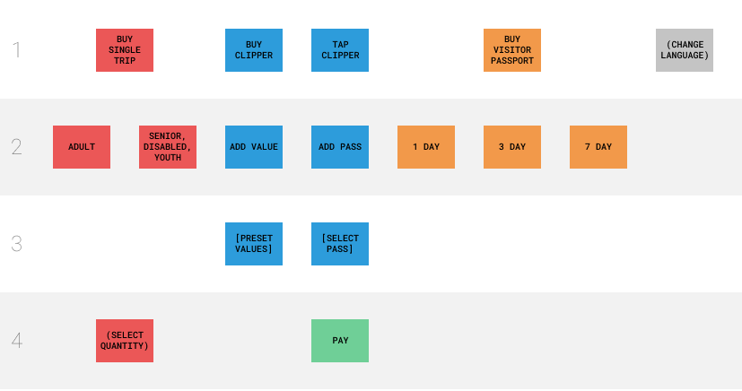
Pros
Narrow (small set of choices per screen)
Straightforward, and unambiguous
Balanced for different customers (all cases take a roughly equal number of steps)
Cons
Relatively deep (relatively large number of steps for all cases)
Difficult to compare options
Compact A
This flow reduces the number of steps it takes to buy a single-trip adult ticket to one tap, making switching to reduced fare an optional step.
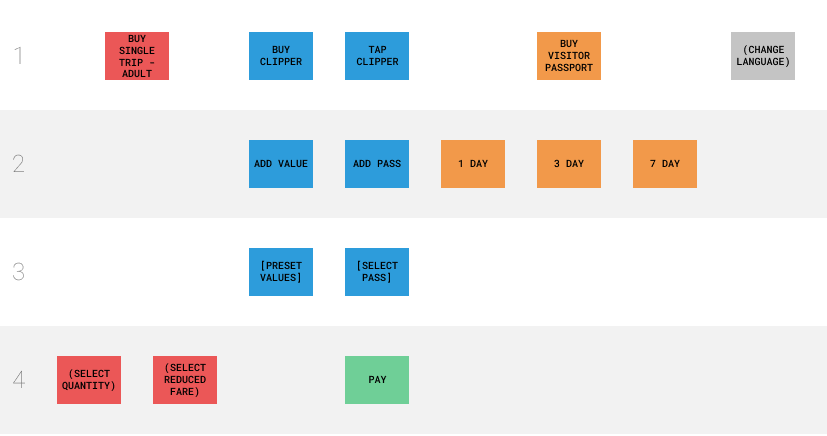
Pros
Increases speed for Single-Trip Adult transactions, which comprise about a quarter of all Muni transactions.
Cons
Possibly increases reduced fare abuse (easy to compare fare differences)
Possibly increases likelyhood of reduced fare users overpaying (they see instructions to pay, and forget to toggle the reduced fare option)
Compact C
This flow elevates both single trip options to the first screen, and elevates both Clipper monthly pass options to the second screen.
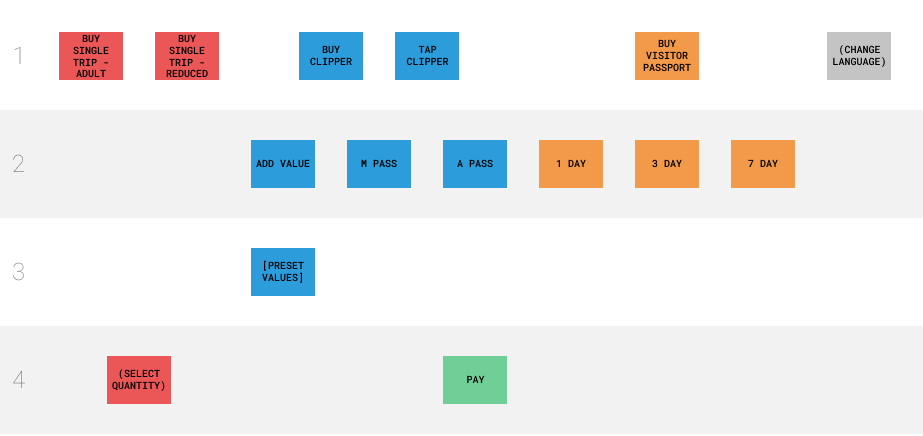
Pros
Increases speed for Single-Trip Adult and Monthly Pass transactions, which comprise about a half of all Muni transactions.
Cons
Slightly increases breadth (number of options on screen at any one time).
Clipper Emphasis
This flow groups all paper ticket options together into a second screen, emphasizing Clipper-based options. It also elevates preset Clipper cash value options
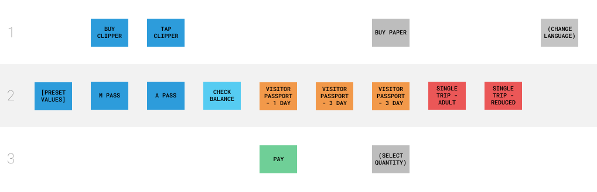
Pros
Increases speed of all transactions, relative to baseline
Easy to compare Single-Trip and Visitor Passport options
Easy to compare Clipper Cash Value and Monthly Passes
Reduces confusion about Clipper Cash Value
Advocates for adoption of Clipper
Articles like this highlight why Clipper has recieved limited adoption among users who would find it the most useful, but also show that Bay Area transit agencies are responding to identified issues. Increasing awareness and education about Clipper in TVMs might be beneficial for users in the long run, even if it slows down cash transactions.
Cons
More difficult to compare Clipper versus paper options
Decreases speed for Single-Trip Adult transactions (relative to Compact A or C)
Increases breadth
Modifier: Language First
One modifier of all flows is to add an explicit language selection screen to the start.
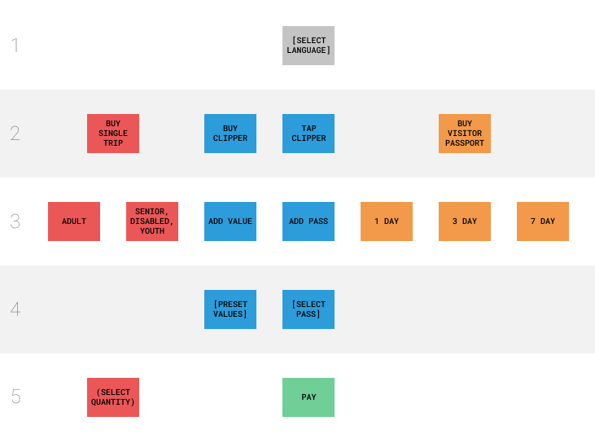
Pros
Increases usability for inexperienced users who do not speak English
Cons
Decreases speed for all users who do speak English
Modifier: Explicit Check Balance
Another modifier is to introduce an explicit check balance function, rather than automatically displaying Clipper info upon tapping.
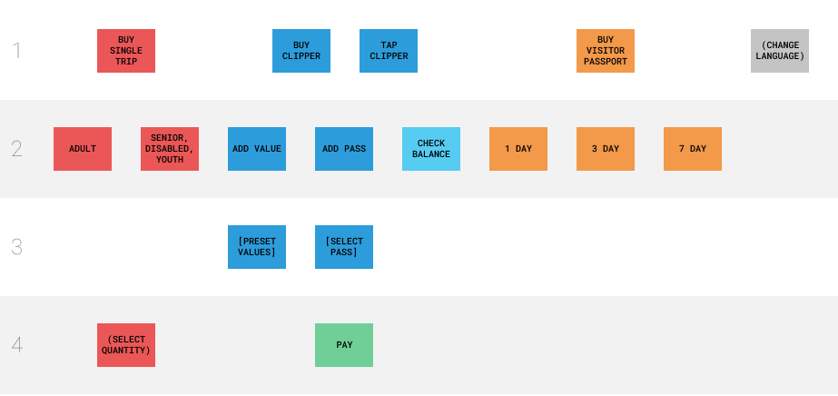
Pros
Increases privacy of clipper transactions
Cons
Increases complexity to check balance, and number of steps to evaluate whether balance is sufficient
Other Flows + Notes
I also explored more radical flows such as a BART-style payment-first flow, but found that this made payment by cash significantly more complicated.
The current Clipper system requires users to re-tap their card after payment to complete the transaction, adding an additional step. Clipper 2.0 will behave more flexibly, however, and this will not be necessary.
In general, increase in breadth most impacts sight-limited users who must use sequential narration to navigate the interface. Presenting highly unrelated options on the screen to reduce number of taps actually decreases speed for them since they must sit through additional menu options.
Flow Selection
In a real world design situation, the next step would be to test a few flows with users, and validate some of our assumptions. In lieu of that, my preference is to continue with Clipper Emphasis, which both advocates for Clipper usage as well as striking a balance between complexity, clarity, and speed for all options.
Mockups
Low Fidelity Mockups
Because our constraints and information design are fairly well-defined, I decided to move directly into low-fidelity mockups. My approach is to work directly in Figma and generate extremely low-resolution (but to scale) "blockboard" mockups that roughly mirror a high fidelity layout. This allows me to get a sense of balance, density, and UI feasibility, and iterate non destructively extremely quickly.

Again here, project constraints limit the exploration space of coarse layouts quite a bit, so I was pretty quickly able to settle on a set of blockboards I was happy with, and transition to higher fidelity explorations.
High Fidelity Mockups
When making high fidelity mockups, I'm focusing on refining and extrapolating from the component system I envisioned. I choose one layout to iterate on in order to solidify system parameters.
This first take works, sort of, but the amount of saturated color and unbalanced whitespace makes it feel noisy and chaotic, even on the homescreen where there are only 3 primary options.
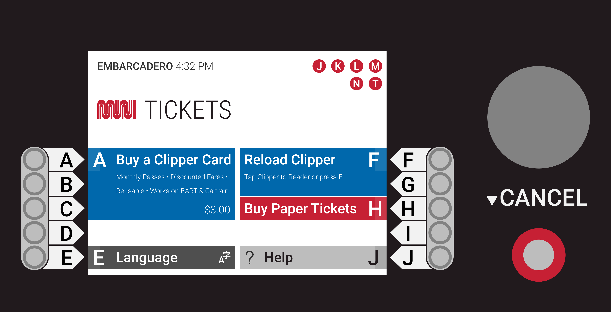
I want to see if decreasing the amount of saturated area would help, so I invert the main selection blocks. This feels better, but obviously is very roughly put together.
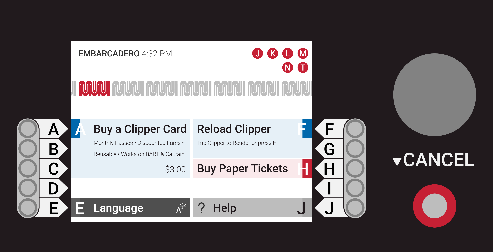
I start again, now getting more of a feel for what works within this design space. I take some inspiration from newspapers, and graphic elements on BART single-use tickets. This works better from an affordance perspective as well, since the horizontal rules maintain a tidy structure without implying a touchable surface, like the solid blocks of color.
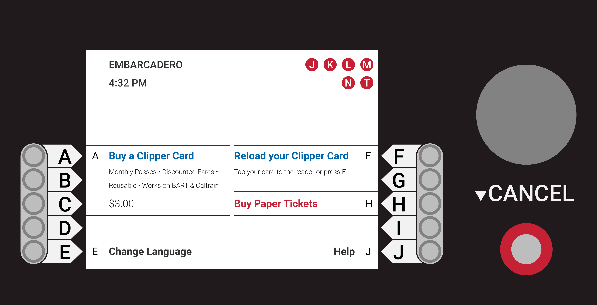
I like the previous take, but it didn't feel much like Muni. I start playing around with color again to see if that changes things. Muni Metro's old color scheme ends up working wonderfully (even though I normally hate maroon and gold).
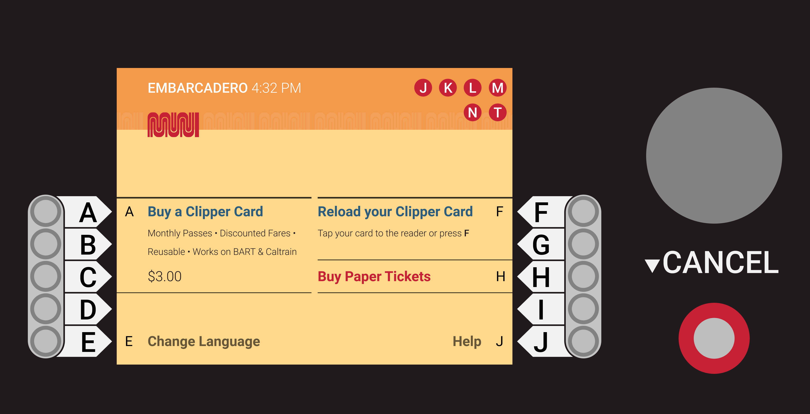
Some final type and color refinements are made. Working at this fidelity has also made me realize that making the station service bullets dynamic and track trains would be simple, and would help usability (who hasn't run into a station praying that they have time to buy a ticket?).
From there, it's relatively straightforward to make high-fidelity mocks for the rest of the primary screens, adjusting the design language as necessary.
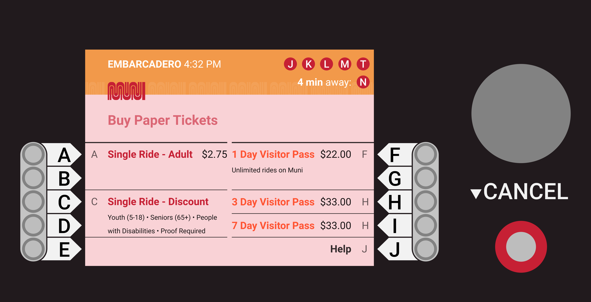
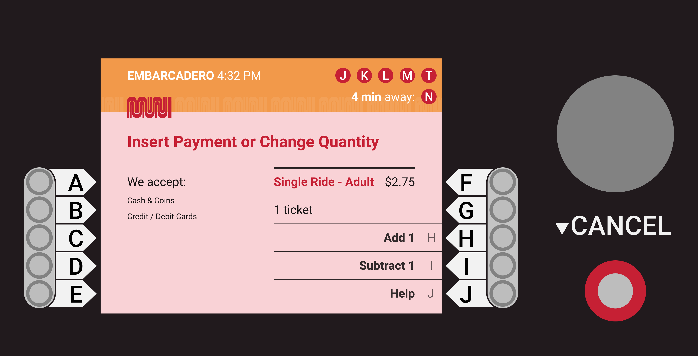
Figma Prototype
Figma offers a straightforward way to wire together artboards into a simple prototype containing different permutations of the main experience. Running through the flow in a prototype mindset lets me think of anything I may have missed.
Web-based prototype
However, a web-based prototype is necessary to show certain aspects, like motion - both ambient, such as on the change language prompt, and in response to screen transitions.
Edge Cases + Unmocked Interactions
Interactions without high-fidelity mockups or not prototyped are mapped out and considered within user flows.
These include:
- Payment Failure - An error screen is shown with the option to retry
- Partial Payment Interstitials - The 'total' field changes to a 'remaining field' upon insertion of cash
- Payment Processing Indicators - Just a load screen as payments process
- Cancel Confirmation Dialog - A confirmation screen is shown with the option to cancel or go back
- Change Language Screen - A list of supported languages is shown
- System Alerts + Delays - The train tracker is augmented or replaced with alert messages
- Help Functionality (Summon Station Agent) - I'm not sure what the current help feature does, so I don't actually know. Presumably a message about the station agent arriving is displayed
- Machine Failure - A non interactive error screen is shown with a debug code
- Clipper Card tap prompt - A prompt screen is shown when Clipper Cards need to be read
- Text-to-Speech handling - The machine reads options sequentially, much like an interactive phone menu. Only primary text and costs are read, not secondary captions. Pressing help at the same time as another action will read extended description text of that action